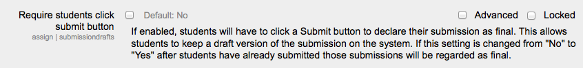
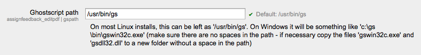
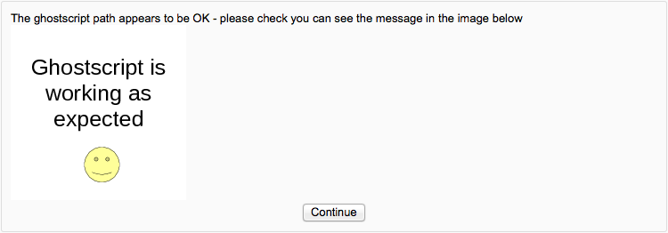

The assignment module allows teachers to collect work from students, review it and provide feedback including grades. The work students submit is visible only to the teacher and not to the other students unless a a group assignment is selected.
The following configuration options are available for an administrator under Administration > Site administration > Plugins > Activity modules > Assignment.
Feedback plugin
The comments that are pushed to the gradebook from the assignment are limited to a single text only comment. An Administrator can specify which of the feedback plugins will be push comments to the gradebook. On a standard Moodle install the choices are “Feedback comments” (default) or “Feedback file” but there may be additional options if your Moodle install contains additional feedback plugins.
Show recent submissions
This option allows everyone to see notifications of submissions in Recent activity reports and the Recent Activity Block, within a course context. Note that the default for this option is No which means students will not be able to see when classmates have submitted or updated any Assignments.
Send submission receipt to students
This switch will enable submission receipts for students. Students will receive a notification every time they successfully submit an assignment.
Submission Statement
An administrator can enter text in the box here which will appear when students are about to submit their assignment. If it is left as the default “No”, then teachers will have the choice within their own assignments to force this or not.
Default assignment settings
The administrator can specify here the default assignment settings which may be set as ‘Advanced’ (ie, they will appear when clicking ‘Show more’) or ‘Locked’ (ie the teacher cannot change them.)
Manage assignment submission plugins
Here you can change the order, check the settings or uninstall a particular submission plugin.
File submissions
Enabled by default - If set, this submission method will be enabled by default for all new assignments.
Maximum submission size - An Administrator can specify the maximum size of any individual file uploaded within the assignment module across all courses on the site. This limit may be equal to or less than course file upload limit.
Online text submissions
Enabled by default If set, this submission method will be enabled by default for all new assignments.
Submission comments
Enabled by default If set, students will be able to send a message to their teacher when submitting their assignment.
Manage assignment feedback plugins - Here you can change the order, check the settings or uninstall a particular feedback plugin.
Feedback comments - Enabled by default If set, this submission method will be enabled by default for all new assignments.
Annotate pdf - Here you can upload stamps for teachers to use when annotating student pdfs. You can also check the ghostscript path. If the default stamps are deleted by accident, they can be found in mod/assign/feedback/editpdf/pix and re-uploaded.
 File feedback - Enabled by default If set, this submission method will be enabled by default for all new assignments.
Offline grading worksheet - Enabled by default If set, this will be enabled by default for all new assignments